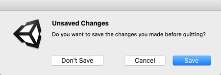
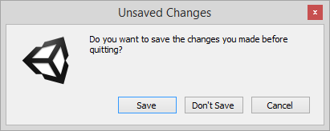

EditorUtility.DisplayDialogComplex
Parameters
| title | Title for dialog. | |
| message | Purpose for the dialog. | |
| ok | Dialog function chosen. | |
| cancel | Close dialog with no operation. | |
| alt | Choose alternative dialog purpose. |
Returns
int The id of the chosen button.
Description 描述
Displays a modal dialog with three buttons.
Use it for displaying message boxes in the editor.DisplayDialogComplex is similar to DisplayDialog. This DisplayDialogComplex member
shows a dialog with three buttons. These buttons represent ok, cancel and alt.
DisplayDialogComplex returns an integer 0, 1 or 2 corresponding to the ok, cancel and alt buttons.
The ok button is the default option, and can also be activated by pressing Enter.
The cancel button is considered the "cancel" button and should usually not perform any action. On a PC, this can also be activated by pressing Escape or by clicking the dialog window close button. On a Mac, this can also be activated by pressing Escape, provided the button is called "Cancel".
The alt button allows you to provide the user with an alternative choice in addition to the ok and cancel buttons. This button does not have a fixed keyboard shortcut.
For compliance with normal platform UI guidelines the actual display order of the buttons
is platform-dependent. On Windows, the order is ok, alt, alt;
on macOS, the order is alt, cancel, ok.
See Also: DisplayDialog.

macOS display dialog buttons for the example below.

PC display dialog buttons for the example below.
The script reference example below creates a complex display dialog. The chosen button
causes a Unity EditorApplication static function to be called.
using UnityEngine; using UnityEditor;
public class DisplayDlgComplexExample : EditorWindow { // Lets you save or not before quitting, or cancel.
[MenuItem("Example/Quit")] static void Init() { int option = EditorUtility.DisplayDialogComplex("Unsaved Changes", "Do you want to save the changes you made before quitting?", "Save", "Cancel", "Don't Save");
switch (option) { // Save. case 0: EditorApplication.SaveScene(EditorApplication.currentScene); EditorApplication.Exit(0); break;
// Cancel. case 1: break;
// Don't Save. case 2: EditorApplication.Exit(0); break;
default: Debug.LogError("Unrecognized option."); break; } } }